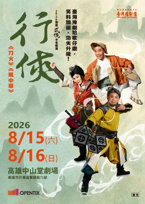

WORK · 2026
《行俠》

誰說行俠仗義一定要一臉正經？
臺灣豫劇團跨域共製《行俠》，顛覆你的武俠想像恥度。
是英雄？是狗熊？還是一場爆笑的誤會？快來一探究竟……
PROGRAM
節目介紹
〈刀火〉︰一把廚刀＋一句酒後玩笑，竟然鬧翻整個武林（啥）？！江湖傳聞只要「焰影刀」出世，一揮便可生出無形烈焰、燒敵於無形。它到底是無上兵器還是烹飪利器？一場廚藝秀，為何會讓「第一惡霸」乖乖讓出盟主之位？原來，那些打打殺殺的江湖大事，背後其實都是虛名與誤會……
還記得《鏢客》中那個憨厚卻武功高強的賣草鞋小子嗎？
〈風中草〉—「小草」前傳，一場關乎忠誠與俠義的抉擇之戰於焉展開。師命與俠義，如何在小草心中掙扎與進化，回望初心，所謂的行俠又意味著什麼？
PRODUCTION TEAM
製作團隊
監製陳悅宜
副監製王逸群、賴銘仁
製作人賴世哲
藝術總監／編腔王海玲
編劇劉建幗、廖珮宇
導演殷青群
音樂設計／音樂指導周以謙
多媒體設計王奕盛
燈光設計／舞臺監督楊秉儒
CAST
主演
〈刀火〉
【豫 劇】美聲公主謝文琪 飾 燕小魚
【豫 劇】幽默花臉吳紹騰 飾 柴八斗
【歌仔戲】薪傳歌仔戲劇團鄭力榮 飾 熊霸天
〈風中草〉
【豫 劇】勁武小飛俠李安傑 飾 小寶（小草）
【歌仔戲】明華園戲劇總團李郁真 飾 楚少塵
【豫 劇】豫劇暖男林文瑋 飾 風清遲